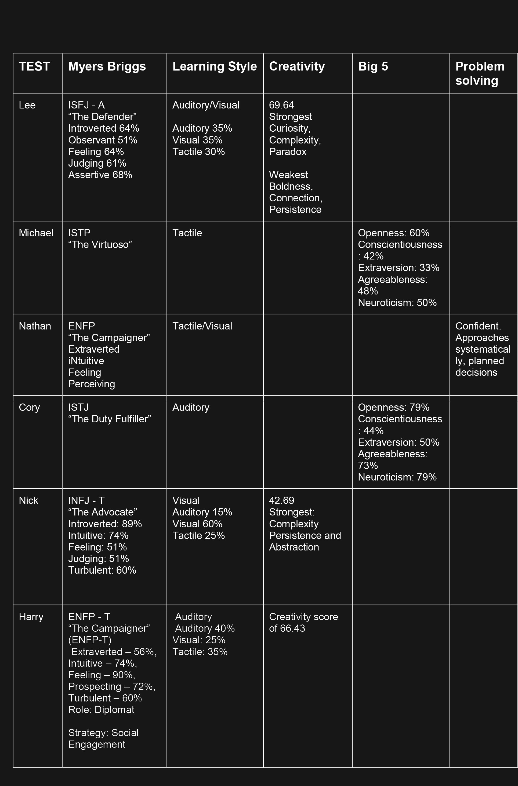

Personality Tests
Of the the 6 members of group fourteen, 4 received results of being introverted, and one of the extraverted members was only 56% on this scale. As we formed early in the process through a discord chat group based around our shared interest in video games, the application has been pivotal in allowing team members to jump on and off as needed, and leave comments and messages for other team members, so communication may be interrupted but is not dropped. All members have traits that lend them to high and intense focus, so the most efficient way for us to complete the project is a divide and conquer approach. By using the discord channel we are able to bridge the obstacles of distance, and the need to meet face to face, provided that the communication continues. The group will probably work efficiently enough without an outright 'project leader', but would benefit from one or more members stepping in as 'overseers', while still allowing individual a large sense of automation towards their own contribution. The team has a wide range of interests and background but also a lot in common, particularly in the areas of IT and video games, and ensuring that communication remains steady and open any issues that arise should be shared without fear of criticism.
